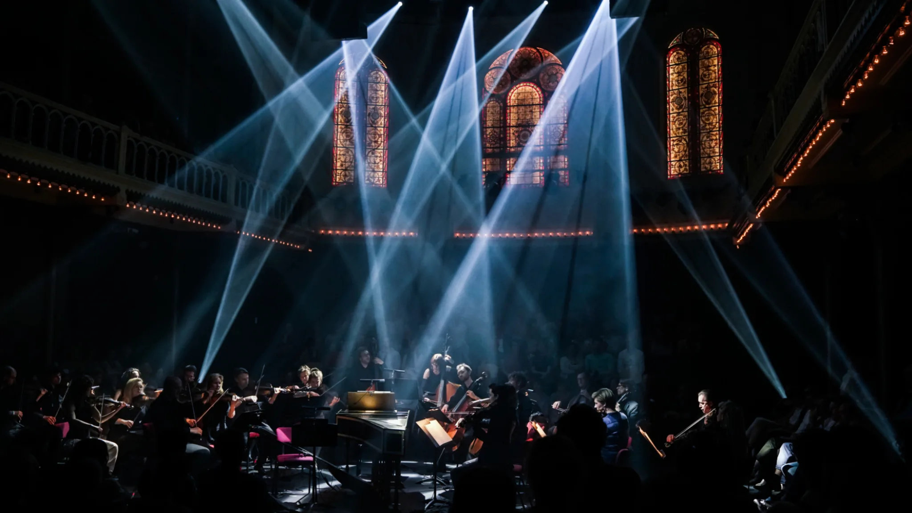
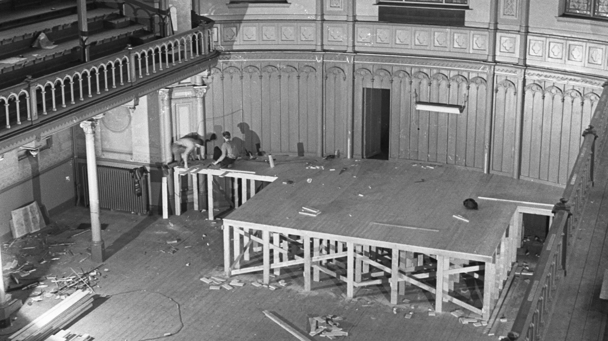
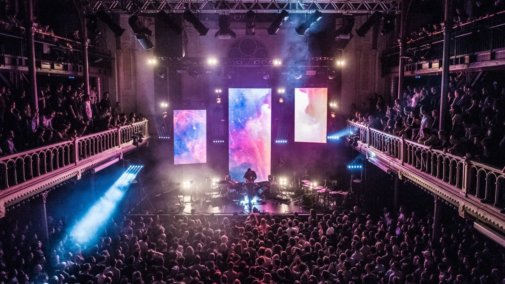
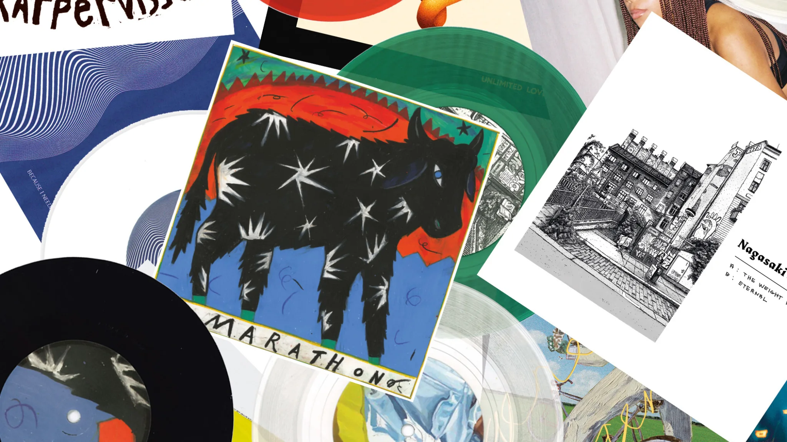
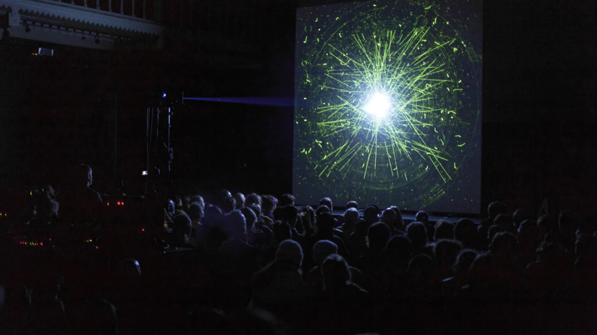

On March 30th, 1968 ‘Cosmic Relaxation Center Paradiso’ opened its doors. The goal was to offer an open place for creative talent. From this day, the church building on Weteringschans was a place that attracted youngsters, audiences and artists from Amsterdam, The Netherlands, Europe and the rest of the world. In the 40 years that followed, Paradiso has become a pop venue, a club and a cultural center in one..
Paradiso
Paradiso is a venue in a former church in the heart of Amsterdam. But we are also more than a thousand events at several locations throughout the city, hosting over 600,000 people annually.
More about Paradiso Paradiso's history
Fifty years of music and culture in Amsterdam. Read about the rich history of the Dutch pop temple that has seen the likes of David Bowie, The Rolling Stones, Nirvana and Prince.
About Paradiso's history Paradiso R&D
The Paradiso Foundation works with, and is connected to a number of other foundations, brought together in Paradiso R&D.
Paradiso R&DSustainability and corporate social responsibility
Arts and culture are not entities on their own. The greater the connection to what is happening in our society, the greater the impact of the artists' messages. With this in mind, you won't be surprised to learn we do everything in our power to create a sustainable and socially responsible future for Paradiso. The way we do this is threefold: through our locations, through our programming and through our HR management
More about sustainability Mission
Paradiso opened in 1968 and in fifty years time it became a pop venue, night club and cultural palace. Ever since the opening Paradiso is so much more than pop concerts. It also searches the boundaries within (pop) culture and gives room to special initiatives and projects.
Read more about our missionCharity status
Paradiso is part of Amsterdam, part of society. We aim to be more than a mere stage, and thankfully we are widely supported in this. The Paradiso Foundation Amsterdam and the Paradiso Foundation for Research and Development have been assigned charity status by the Dutch Tax Office. This is great news for anyone who would like to support us with a donation!
More informationThese are the people who work to make sure everyone has an unforgettable experience at Paradiso.
If you have a question or comment, feel free to askParadiso Vinyl Club
The intimacy of our Upstairs Hall. The most talented new musicians. And music exclusively published by Paradiso, delivered to your front door. Paradiso Vinyl club in a nut shell. For a small monthly fee you'll support the best new artists, and you will receive exclusive vinyl releases, downloads, concert tickets and much more.
Everything you need to know about Paradiso Vinyl Club Re-Imagine Europe
Re-Imagine Europe: New Perspectives for Action (2023-2027) is a four-year transnational co-creation and circulation project, aiming to equip and empower young Europeans through artistic practices to better withstand societal challenges. Re-Imagine Europe is a partnership of 14 cultural organisations across Europe, coordinated by Paradiso (the Netherlands) and initiated by Sonic Acts (the Netherlands).
More about Re-Imagine Europe Zing Nederlands Met Me
Paradiso presents Zing Nederlands Met Me for everyone who wishes to learn the Dutch language. During these singing sessions of one hour we sing Dutch songs in the Small Hall of Paradiso. With the aim to learn Dutch while singing.
Follow Zing Nederlands Met Me on Facebook